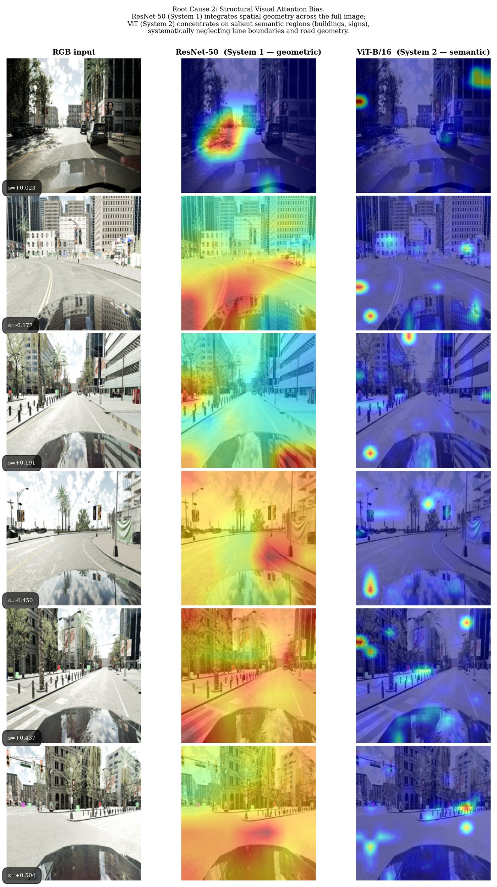
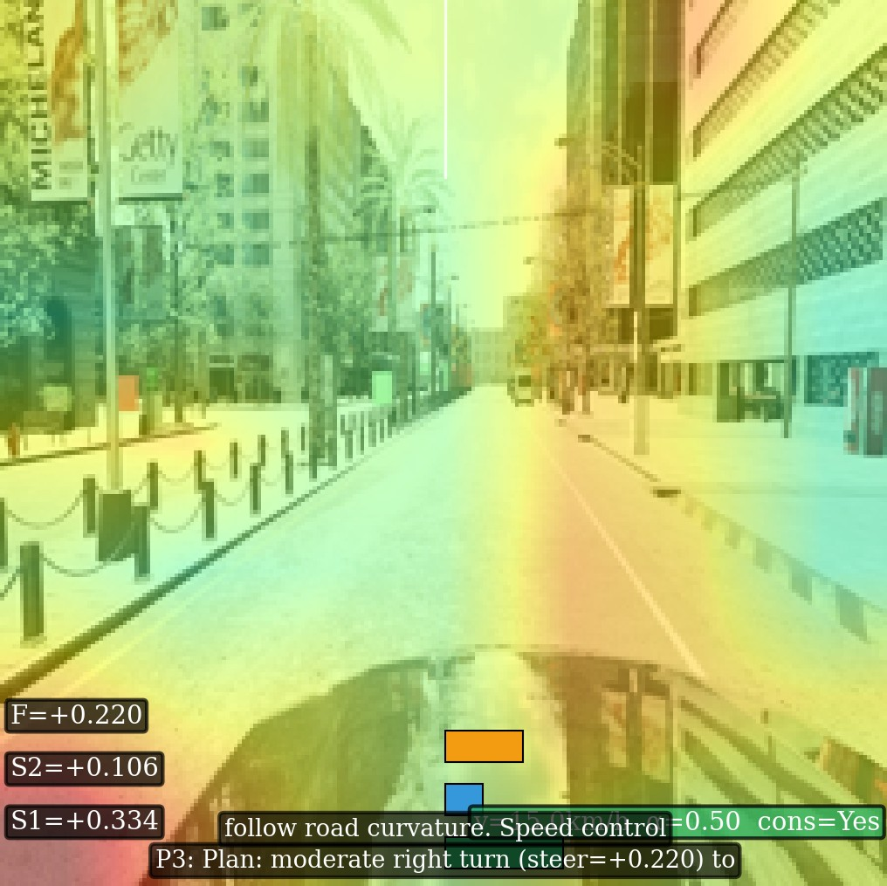

{kind=link}
學位論文
視覺語言模型在可稽核端到端自動駕駛系統之應用與評估
Application and Evaluation of Vision-Language Models in Auditable End-to-End Autonomous Driving Systems
視覺語言模型 · 可稽核性人工智慧 · 端到端自動駕駛 · 閉環評估 · 雙過程架構 · 解耦控制 · 圖視覺問答
可稽核 AI · 視覺語言模型 · 安全關鍵自主系統
碩士，國立臺北科技大學 自動化科技研究所
指導教授：陳文輝 博士
我的研究問題不是「AI 能不能解釋自己」，而是當 AI 參與安全關鍵決策時， 系統能否留下足以被第三方稽核、監理機關或法庭檢驗的證據。 碩士階段刻畫了視覺語言模型與連續控制器共用視覺編碼器時的結構性失效機制， 並提出嚴格梯度解耦的雙過程架構，於閉環基準達成完整路線完成與零碰撞。
下載：完整 CV（PDF） · 研究摘要（PDF，一頁）
碩士階段我發現並刻畫了一個結構性失效機制：當視覺語言模型與連續控制器共用視覺編碼器時， 語義推理與幾何控制之間存在無法靠調參化解的衝突，會導致模型在開環評估中看起來正常， 閉環中卻在數十公尺內偏出車道。語言對控制的梯度壓力比實測為 35–41:1； 八個統一架構變體的閉環完成率皆低於 9%；本架構在五個種子上均為零碰撞， 可稽核性的速度代價約 6%。
最反直覺的結果
八個統一架構變體中，有一個的開環誤差（MAE 0.0113） 比不崩潰的架構（0.0144）更小，閉環完成率卻不到 9%。
以離線指標預測閉環可行性，這件事本身不成立。

![雙過程架構圖。上方兩個藍色平行四邊形為輸入：前視 RGB 相機 1280x720 @ 30 Hz，以及車輛狀態（自車速度、路徑、位置）。左側綠色為 System 1 幾何路徑：ResNet-50 ImageNet 骨幹輸出 2048 維特徵，經 WaypointHead 多層感知器 2048-512-256-10 產生五個路徑點，再由 Pure Pursuit 加 PID 合成控制，前視距離 2.875 公尺並以 EMA 平滑。右側紫色為 System 2 語義路徑：ViT-G/14 共 14 億參數且凍結、Q-Former 32 個學習查詢且凍結、Flan-T5-XL 加 LoRA r=16 alpha=32 共 430 萬可訓練參數佔 0.10%，輸出 GVQA 四層推理鏈。兩條路徑之間以紅色虛線標示 no shared params、gradient firewall by construction。中央橘色六邊形為非對稱因果融合橋，列出四條規則決定融合權重，並註明縱向為單向否決，System 2 只能煞車。下方三個輸出：幾何控制指令、GVQA 稽核軌跡、以及多種子 n=5 的驗證結果。](files/architecture.png)

| 指標 | 本架構 | 八個統一架構變體 |
|---|---|---|
| 路線完成率 | 100.009 ± 0.002% | ≤ 9% |
| 碰撞數 | 0（五個種子皆為零） | 最多 299 次 |
| 語義-控制一致性 | 97.35 ± 1.14% | — |
| 因果影響 | 75.60 ± 2.58% | — |
| 速度代價 | 約 6% | — |
CARLA 0.10.0，五條路線共 5,000 m，n = 5 多種子評估。 另有 CARLA 0.9.15 跨版本配對診斷共 150 組配對，界定外部效度。
為什麼完成率會超過 100% 此處的路線完成率是「實際行駛距離 ÷ 至規劃終點的距離」的相對量測， 不是進度條式的截斷比例。抵達判定為進入終點 5 m 半徑內， 車輛因慣性與感測延遲會略微越過終點，該段殘餘行程仍計入行駛距離 —— 超出量為路線長度的 0.001–0.011%，在 1,000 m 路線上相當於 10–110 cm。 刻意不截斷至 100%，因為截斷會破壞完成率與所記錄行駛距離之間的線性可重現對應。 正確讀法是「達成 ≥100% 完成、終點精度約 ±1 m」， 而安全宣稱由碰撞欄承擔 —— 該欄在五個種子上皆為 0，標準差為零。
碩士階段產出的稽核紀錄仍是相關性證據。 要讓一段紀錄能承擔責任歸屬，必須同時滿足三個條件，目前無系統同時達成：
目標是把「模型推理對致動的影響」從統計上的觀察，推進為可形式化驗證的性質。 其中第二項需要密碼學與可信執行環境，而不是機器學習 —— 那正是我二十年資安治理背景能直接接上的地方。
學位論文
Application and Evaluation of Vision-Language Models in Auditable End-to-End Autonomous Driving Systems
視覺語言模型 · 可稽核性人工智慧 · 端到端自動駕駛 · 閉環評估 · 雙過程架構 · 解耦控制 · 圖視覺問答
會議論文· 已投稿，審查中
提出有界權限設計：System 1 在所有安全關鍵情境 （高曲率轉彎、方向衝突、System 2 失效）保有完整橫向控制權； System 2 只能透過有界否決降低速度目標，永遠不能提高。
Within this scope, strict decoupling, not capacity, is what closes the loop.
期刊論文· 投稿準備中
量化兩個崩潰根因，並以八變體消融與跨版本配對診斷證偽 「開環誤差可預測閉環可行性」這個普遍做法。
弱電施工 → 系統整合 → 產品規劃 → 電信級方案 → 資安治理 → 基礎模型失效機制研究
我在產業交付過必須接受第三方稽核的系統：科技執法、司法矯正、海事執法、國防與公共能源。 這些系統的共同點是，判斷錯誤時必須有人負責，而負責的前提是能證明當時發生了什麼。
可解釋與可稽核在這裡分開了。可解釋的對象是開發者，目的是理解與除錯； 可稽核的對象是第三方稽核方、監理機關與法庭，目的是舉證。 attention map 能協助前者，但它是模型的事後歸因， 不構成可獨立驗證的證據 —— 它無法回答「這份說明是否就是當時實際驅動控制的依據」。
這個區分是我從稽核實務帶進研究的問題意識， 也是碩士論文選擇量化語義-控制一致性與因果影響、 而非僅提供視覺化解釋的原因。
涵蓋需求分析、規格設計、系統整合、測試驗收、教育訓練至維運稽核的完整生命週期。
下載：完整 CV（PDF） · 研究摘要（PDF，一頁）